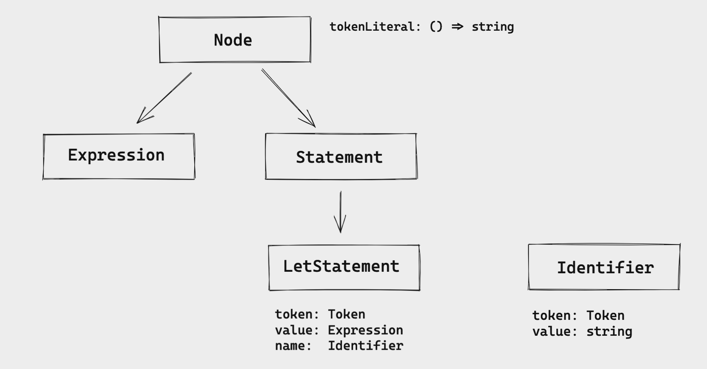

Parser - Part 1: Fundamental parts of AST and basic statements
This post is part of a series called Building an Interpreter.
Now that we implemented the first steps of our lexer, more complex tokens, extended the token set with special characters, and implemented a REPL to print the tokens using our lexer, we want to start building the AST and the parser.
"A parser is a software component that takes input data (frequently text) and builds a data structure – often some kind of parse tree, abstract syntax tree or other hierarchical structure – giving a structural representation of the input, checking for correct syntax in the process. […] The parser is often preceded by a separate lexical analyser, which creates tokens from the sequence of input characters." - Wikipedia
So the idea of the parser will be to receive input data, can be text or tokens, and to produce a new data structure that represents this input data.
The data structure the parsers produce is commonly called AST, or abstract syntax tree. It's called "abstract" because this data structure omits visible details of the source code like semicolons, newlines, whitespace, and so on.
In the process of building this data structure, it also analyzes the source code, checking whether the generated tokens form a meaningful expression. This process is called Syntactic Analysis.
Parsing JSON strings as an example. It transforms the string input into a data structure (JavaScript Object).
const input = '{"name": "TK", "age": 25}';
const output = JSON.parse(input);
output;
=> { name: 'TK', age: 25 }
output.name;
=> 'TK'
output.age;
=> 25
It also has the "syntactic analysis". When passing a "wrong" input
data, it will throw a syntax error (SyntaxError):
const input = '{"name": "TK", 25}';
const output = JSON.parse(input);
=> Uncaught SyntaxError: Unexpected number in JSON at position 15
In this case, position 15 is the value 25, where it is
missing the attribute here.
Fundamental AST
To parse the Let Statement, let's first understand its
syntax.
let x = 10;
let y = 15;
let add = fn(a, b) {
return a + b;
};
Taking a closer look at this example, we can see a pattern here. All three statements have this same form:
let <identifier> = <expression>;
So, in this case, it's easy to understand that 10,
15, and fn are expressions. The difference
between statements and expressions is simple in this PL: expressions
produce value, statements don't.
And they are a fundamental part of the AST. Everything is a node in the tree, that can be a statement or an expression.
interface Node {
tokenLiteral: () => string;
}
The first step is to create this Node interface. Every
node has to implement this tokenLiteral function.
Meaning: every node has a token literal associated with it.
export interface Statement extends Node {}
export interface Expression extends Node {}
The Statement and the Expression interfaces
are built on top of the Node interface. Let's make it
very simple now and improve later.
The other fundamental part of the AST is the Program.
It's the root node of the AST and it contains a list of statements.
export class Program {
statements: Statement[] = [];
}
Parsing the let statement
Now that we have the foundation for our AST, we can build more
specific statements. And we'll start with the
LetStatement.

This is how I'm visualizing the relationship between the
LetStatement and the other interfaces.
We start with "everything is a node". Then we have the two main
interfaces: Expression and Statement. In
this case, LetStatement implements the
Statement interface.
The LetStatement has these attributes:
-
token: it has the type of theTokenclass we defined when we built the lexer. (just to refresh our memories, theTokenhas two attributes: thetype(string) andliteral(string). Thetypeis any token we defined in the enum and theliteralis the literal value of the token) -
value: it's anExpression. But we'll see more about this only in the next part of this series. -
name: it's anIdentifierthat has atokenand avalueas the attributes.
To illustrate how it works in the code, let's see this example
let x = 1;
The representation of the LetStatement's AST would be:
LetStatement {
token: Token { type: 'LET', literal: 'let' },
name: Identifier {
token: Token { type: 'IDENT', literal: 'x' },
value: 'x'
}
}
We have the token that's the LET token and
the name that's an Identifier with a token
IDENT and the value as 'x'. We
won't cover the value attribute because we'll see this
Expression in the next part of this series.
With this in mind, we can create our LetStatement class:
class LetStatement implements Statement {
token: Token;
name: Identifier;
value: Expression;
constructor(token: Token) {
this.token = token;
}
tokenLiteral() {
return this.token.literal;
}
}
It has everything we already discussed, but we are missing the
Identifier implementation:
class Identifier implements Expression {
token: Token;
value: string;
constructor(token: Token, value: string) {
this.token = token;
this.value = value;
}
tokenLiteral() {
return this.token.literal;
}
}
We also discussed this structure and what it should have: the
token and the value.
Now we have all the necessary AST nodes to start to implement the
parser. But before we build the parser and start parsing the
LetStatement, we'll add tests to cover this
implementation first.
describe('Parser', () => {
describe('parseProgram', () => {
it('parses the let statement', () => {
const input = `
let x = 5;
let y = 10;
let foobar = 10000;
`;
const lexer = new Lexer(input);
const parser = new Parser(lexer);
const program = parser.parseProgram();
const tests = [
{ identifier: 'x' },
{ identifier: 'y' },
{ identifier: 'foobar' },
];
tests.forEach(({ identifier }, index) => {
const statement = program.statements[index];
expect(statement.tokenLiteral()).toEqual('let');
expect(statement.name.value).toEqual(identifier);
expect(statement.name.tokenLiteral()).toEqual(identifier);
});
});
});
});
We want the parser to parse this input
let x = 5;
let y = 10;
let foobar = 10000;
First, we pass the input to the Lexer and
then the lexer to the Parser. And now we can
call the parsePogram. It'll return the
program with all the statements related to
the input data.
What are we testing here?
- the statement token literal should be
'let'. -
the identifier's value should the
identifierwe have in thetestsarray. -
and the token literal of the identifier should also be the
identifier.
Now we can start implementing the Parser and pass the
tests. We start with the basic definition of the
Parser class.
class Parser {
private lexer: Lexer;
private currentToken: Token;
private peekToken: Token;
constructor(lexer: Lexer) {
this.lexer = lexer;
}
}
We need to make sure that the lexer is passed as a
parameter and the parser should also have the:
currentToken: it is the token under examination-
peekToken: it is the next token that helps decide what to do next
We'll also have a method called nextToken to update the
currentToken and the peekToken:
nextToken() {
this.currentToken = this.peekToken;
this.peekToken = this.lexer.nextToken();
}
And to initialize these two states, we can call this method two times in the constructor. Calling two times will set the correct state for the current and the next tokens. It looks like this:
constructor(lexer: Lexer) {
this.lexer = lexer;
this.nextToken();
this.nextToken();
}
Now the parseProgram. The idea of this method is to
create a program and parse each statement based on the tokens and add
all the statements to the statements list in the program.
parseProgram() {
const program = new Program();
while (this.currentToken.type !== Tokens.EOF) {
const statement = this.parseStatement();
if (statement !== null) {
program.statements.push(statement);
}
this.nextToken();
}
return program;
}
It iterates through all the tokens from the lexer, for each token, it'll parse the statement and add it to the statements list. And in the end, it'll just return the program.
From this code, we need to implement this
parseStatement method.
private parseLetStatement() {
const statement = new LetStatement(this.currentToken);
if (!this.expectPeek(Tokens.IDENT)) {
return null;
}
const identifier = new Identifier(
this.currentToken,
this.currentToken.literal
);
statement.name = identifier;
if (!this.expectPeek(Tokens.ASSIGN)) {
return null;
}
while (!this.currentTokenIs(Tokens.SEMICOLON)) {
this.nextToken();
}
return statement;
}
I think this first implementation is not the best one, but we can refactor it later (I have some ideas in mind that I want to try later).
-
The first thing is to create a new
LetStatementbased on the current token -
Then we need to confirm that the next token is an
Identifier. If it's, we callnextTokento update the state of thecurrentTokenand thepeekToken. If not, we just returnnull(just to simplify for now). - Then we move to create the identifier. We just pass the current token and the current token's literal and update the statement name with this new identifier.
-
We expect that the next token is a
=token (ASSIGN). - TODO: implement the expression/value in the next post of this series
-
After that, we just go through all the tokens until we find the
;token and return the new statement.
This new statement will be used to add it to the statements list in
the program. But we are missing two important methods here:
expectPeek and currentTokenIs. Let's
implement them.
private currentTokenIs(token: TokenType) {
return this.currentToken.type === token;
}
currentTokenIs is a simple method to verify if the
current token has the same token type that we expect it has.
private peekTokenIs(token: TokenType) {
return this.peekToken.type === token;
}
private expectPeek(token: TokenType) {
if (this.peekTokenIs(token)) {
this.nextToken();
return true;
}
return false;
}
The expectPeek method will use the
peekTokenIs (that's very similar to the
currentTokenIs, but for the peekToken) to
verify if the token is the expected one. If it is, we update the
current and the next token and return true. If not just return false
(we'll also add error handling soon).
Now we have the parser, the program, and we can parse let statements making the tests pass.
Handling errors
For this input data let x = 5;, we don't have any syntax
problem, so we won't have any error to handle. But imagine the PL user
type this:
let 123;
let a;
There's a syntax error. Because, for a let statement, we expect that
after the let token, we get an identifier, not the
value/expression. And for the second example, after having the
identifier, the parser expects that it has = token.
We could output something like this to the user:
let 123;
=> 'expected next token to be IDENT, got INT instead'
let a;
=> 'expected next token to be =, got ; instead'
Errors are ways to communicate to the users about what they are writing and help them get to the final goal (a "working software").
But how do we do that? Let's start with the tests as we always do.
it('parses an input with error', () => {
const input = `
let 123;
let a;
`;
const lexer = new Lexer(input);
const parser = new Parser(lexer);
parser.parseProgram();
const errors = parser.getErrors();
const expectedErrors = [
'expected next token to be IDENT, got INT instead',
'expected next token to be =, got ; instead',
];
errors.forEach((error, index) => {
expect(error).toEqual(expectedErrors[index]);
});
});
Here we have the input data that we talked about. But now we'll also
have a getErrors method to get all the possible errors
the parser had while parsing the input.
And we expect that the parser has these two errors we already discussed.
Ok, to have all the errors, let's create a list of errors in the parser.
type Error = string;
class Parser {
private lexer: Lexer;
private currentToken: Token;
private peekToken: Token;
private errors: Error[];
constructor(lexer: Lexer) {
this.lexer = lexer;
this.errors = [];
this.nextToken();
this.nextToken();
}
}
It's very simple, it's just a private attribute from the class
Parser, it has the type Error (that's a
string), and we initialize it with an empty list.
The getErrors method will only return the errors
attribute:
getErrors() {
return this.errors;
}
And now what we need to do is to add a error message when the parser gets an error.
In this case, we'll add an error to the list when the next token it's
not the expected one, so the place we do that is in the
expectPeek method.
private expectPeek(token: TokenType) {
if (this.peekTokenIs(token)) {
this.nextToken();
return true;
}
this.peekError(token);
return false;
}
When the next token is not the expected one, we call the
peekError method passing the expected token to it. Now
let's implement this new method: